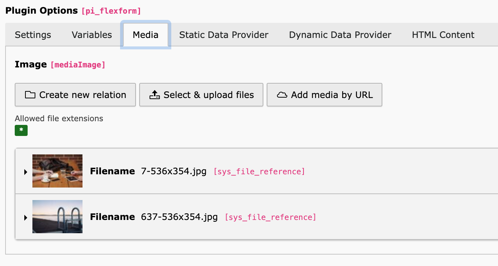

Media Integration¶
Inlinefluid supports structured media handling via a dedicated Media tab in the FlexForm. This allows attaching one or multiple media files to a content element and rendering them dynamically in Fluid.
Media Tab Overview¶
The Media tab provides:
Inline FAL relations using
sys_file_referenceSupport for multiple images per content element
Drag & drop sorting
File type restrictions (e.g. images only)
All selected media items are exposed to Fluid as an iterable collection
(e.g. mediaImages).


Accessing Media in Fluid¶
Media items can be rendered using standard Fluid ViewHelpers:
<f:for each="{mediaImages}" as="img">
<f:image image="{img}" />
</f:for>
Bootstrap Carousel Example¶
Example usage of the Media tab for a Bootstrap carousel:
<div id="carouselExample" class="carousel slide">
<div class="carousel-inner">
<f:for each="{mediaImages}" as="img" iteration="iterator">
<div class="carousel-item{f:if(condition: iterator.isFirst, then: ' active')}">
<f:image image="{img}" class="d-block w-100 h-auto" />
</div>
</f:for>
</div>
</div>
Editorial Workflow¶
Images are selected in the Media tab
Order is defined via drag & drop
Rendering adapts automatically to the number of images
No template changes are required
Important Notes¶
CSS and JavaScript frameworks (e.g. Bootstrap) must be included separately
The Media tab handles content selection only, not presentation
Rendering logic remains fully controlled by the Fluid template
Summary¶
The Media tab provides editor-friendly media management, while Fluid defines the rendering. This separation allows flexible implementations such as sliders, galleries, or carousels without hardcoded media references.